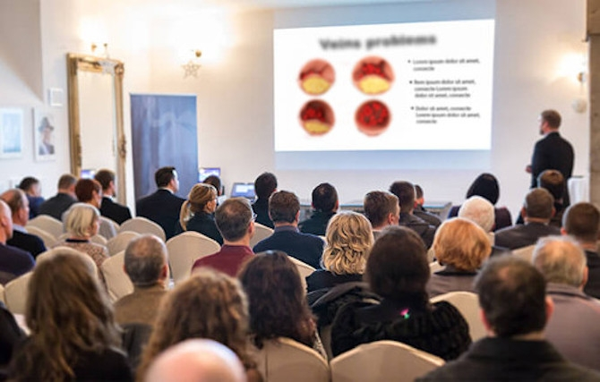

Σοβαρές επιπλοκές μετά από την εγχείρηση της καρδιάς
ΑΡΘΡΑ / ΤΕΛΕΥΤΑΙΕΣ ΑΝΑΚΑΛΥΨΕΙΣ / «Η εποχή της αθηροσκλήρωσης τελείωσε! Πρωτοποριακή ιατρική...
Το τέλος της εποχής της αθηροσκλήρωσης και της καρδιακής προσβολής; Ο Σουηδός ανακάλυψε μια μέθοδο, που αποκαθιστά τη ροή του αίματος στις φλέβες και τη σωστή κυκλοφορία του αίματος σε 28 ημέρες.

Θα κερδίσει μια νέα μέθοδος μη επεμβατικού καθαρισμού των αρτηριών; Ο φόβος των εκατομμυρίων ανθρώπων για το έμφραγμα και το εγκεφαλικό επεισόδιο; Οι διαπρεπείς καρδιολόγοι δεν το αμφισβητούν αυτό. Ταυτόχρονα με την ανάπτυξη της φυσικής καρδιοκυκλοφορικής φόρμουλας από τους Σουηδούς, σημειώθηκε μια πολυαναμενόμενη σημαντική ανακάλυψη στον αγώνα για τη σωστή λειτουργία του κυκλοφορικού συστήματος.
Πάνω από 14.000 χρήστες της καρδιοκυκλικής μεθόδου 28 ημερών, έχουν καθαρίσει τις αρτηρίες τους και έχουν επιστρέψει σε πλήρη φυσική κατάσταση - φυσικά, με ασφάλεια και χωρίς να αλλάξουν τον τρόπο της ζωής τους. Οι άνθρωποι που εκμεταλλεύτηκαν αυτή την ανακάλυψη απαλλάχτηκαν από τις αθηρωματικές πλάκες και τις εναποθέσεις κακής χοληστερόλης στις αρτηρίες και ομαλοποίησαν μια για πάντα την αρτηριακή τους πίεση. Χάρη σε αυτή τη μέθοδο, επέκτειναν κάθε αρτηρία ξεχωριστά, αποκατέστησαν τη φυσιολογική ροή του αίματος και γέμισαν όλα τα όργανα με οξυγόνο. Ως αποτέλεσμα, μείωσαν τον κίνδυνο της καρδιακής προσβολής κατά 185% και εγκεφαλικού κατά 168%, προστατεύτηκαν από την αθηροσκλήρωση και αποκατέστησαν την κατάστασή τους όπως οι νέοι των 20-25 ετών. Πώς είναι αυτό δυνατόν;
Ο καθηγητής Per-Olof Sandström (ειδικός στον τομέα της μοριακής βιολογίας) αποφάσισε να σώσει τη σύζυγό του από σοβαρή καρδιαγγειακή ανεπάρκεια, η οποία αποδείχθηκε, ότι ήταν η αιτία της πρώτης καρδιακής προσβολής - και αυτό ξεκίνησε μια επανάσταση στην καρδιολογία. Μετά από ένα χρόνο προηγμένης εργαστηριακής έρευνας, ο καθηγητής ανέπτυξε φυσική, ασφαλής και εύκολη στη χρήση φόρμουλα για το καρδιαγγειακό σύστημα, που καθαρίζει τις αρτηρίες από τις αθηρωματικές πλάκες, τις εναποθέσεις της κακής χοληστερόλης και των τοξινών σε 28 ημέρες. Με αυτόν τον τρόπο, η κυκλοφορία του αίματος βελτιώνεται κατά 180% και κάνει το αίμα να ρέει σωστά σε κάθε όργανο του σώματος και να του παρέχει τα θρεπτικά συστατικά και το οξυγόνο που χρειάζεται το σώμα για να ζήσει. Ως αποτέλεσμα, κάθε μεμονωμένο κύτταρο είναι 100% κορεσμένο με οξυγόνο. Ως αποτέλεσμα, η καρδιοκυκλική φόρμουλα όχι μόνο σας σώζει από σοβαρές καρδιακές παθήσεις, αλλά επίσης ανακουφίζει από τους κιρσούς, τις κράμπες στις γάμπες, ακόμη και από την αίσθηση του κρύου στα πόδια και στα χέρια.
Το προϊόν διακηρυχθηκε από τα επαγγελματικά ιατρικά περιοδικά ως «η πρωτοποριακή επιτυχία στη μάχη κατά της κυκλοφορικής ανεπάρκειας» και ο καθηγητής έχει λάβει πολλά έγκριτα βραβεία για την ανακάλυψή του. Χάρη σε αυτό το θαυματουργό αποτέλεσμα, ακόμη και άτομα που έχουν αγωνιστεί με πολύ προχωρημένη αθηροσκλήρωση μπορούν, σε 28 ημέρες, να καθαρίσουν εντελώς κάθε φλέβα, να αποκαταστήσουν τη σωστή κυκλοφορία του αίματος στο σπίτι.
"Οι παραδοσιακοί τρόποι αντιμετώπισης της καρδιακής ανεπάρκειας είναι σπατάλη χρημάτων!" Από πού προήλθε αυτή η ιδέα;
-
Η χειρουργική επέμβαση είναι η τελευταία επιλογή
Όταν δεν υπάρχει άλλη επιλογή, οι θεραπείες όπως η αγγειογραφία ή η χειρουργική επέμβαση bypass σώζουν ζωές. Ωστόσο, οποιαδήποτε επέμβαση είναι επικίνδυνη και η αποκατάσταση μετά από μια τόσο περίπλοκη διαδικασία μπορεί να διαρκέσει έξι μήνες. Εξάλλου, στο 97% των ασθενών μετά από 4-5 χρόνια, η διαδικασία πρέπει να επαναληφθεί. Δεν είναι καλύτερα να λύσετε το πρόβλημα αρχικά και να απαλλαγείτε από την αθηρωματική πλάκα γρήγορα, με ασφάλεια και φυσικά;
-
Οι διαφημιζόμενες καραμέλες δεν λειτουργούν
Κάθε μέρα βομβαρδίζεστε με εκατοντάδες πολύχρωμες διαφημίσεις για καραμέλες, που «δουλεύουν ενάντια σε όλα». Θα πρέπει να γνωρίζετε, ότι οι άνθρωποι που βλέπετε στην τηλεόραση, είναι απλώς ηθοποιοί, που δεν έχουν ιδέα τι αντιμετωπίζετε καθημερινά. Γνωρίζατε ότι αυτές οι πολύχρωμες καραμέλες δεν ελέγχονται ποτέ από τους ειδικούς; Στην καλύτερη περίπτωση, δεν λειτουργούν καθόλου. Στη χειρότερη περίπτωση θα βλάψουν περισσότερο την υγεία σας.
-
Η ζωή χωρίς το άγχος είναι αδύνατη
Οι γιατροί σε όλο τον κόσμο, συνιστούν στους ασθενείς τους έναν ήρεμο τρόπο ζωής, χωρίς άγχος και ξαφνικές συναισθηματικές εκρήξεις. Προφανώς, αυτό γίνεται για την προστασία τους από τις αγγειακές παθήσεις και την καρδιακή προσβολή. Φυσικά, πιο εύκολο να το λες παρά να το κάνεις. Ίσως αν κάποιος έχει πολλά χρήματα και δεν χρειάζεται να ανησυχεί για το πώς θα πληρώσει τους λογαριασμούς και με τι θα αγοράσει το ψωμί για την επόμενη μέρα. Πόσοι όμως είναι αυτοί οι άνθρωποι; Ας το παραδεχτούμε, η ζωή χωρίς το άγχος είναι σχεδόν αδύνατη. Ο μέσος άνθρωπος δεν μπορεί να αντέξει μια τέτοια πολυτέλεια.
-
Η σωματική δραστηριότητα δεν προστατεύει από την καρδιακή προσβολή
Οι ειδικοί προειδοποιούν, ότι η καθιστική ζωή αυξάνει τον κίνδυνο της καρδιακής προσβολής κατά πέντε φορές. Αποδεικνύεται ότι η άσκηση και ο ενεργός τρόπος ζωής, αν και πολύ ευεργετικά για την υγεία, δεν προστατεύουν τα αιμοφόρα αγγεία κατά 100% από τις ασθένειες και δεν προστατεύουν από την καρδιακή προσβολή. Σε 3 από τα 5 άτομα, που διατρέχουν κίνδυνο, η νόσος συνεχίζει να αναπτύσσεται.
-
Οι θεραπείες στο σπίτι δεν είναι πολύ αποτελεσματικές
Τα αφεψήματα από βότανα της γιαγιάς, μπορεί να εξουδετερώσουν τις καρδιακές παθήσεις, αλλά σίγουρα δεν θα θεραπεύσουν τις υπάρχουσες παθήσεις. Αυτό απαιτεί μια επιστημονικά αποδεδειγμένη μέθοδο, η οποία, φυσικά, μπορεί να βασίζεται σε φυσικά συστατικά, αλλά και διαμορφωμένη με τον σωστό τρόπο και συγκέντρωση.
Επομένως, η καρδιοκυκλοφορική μέθοδος του καθηγητή Sandström είναι μια πραγματική ανακάλυψη στον αγώνα για ένα εύρυθμο κυκλοφορικό σύστημα.
Οι παραδοσιακές μέθοδοι της χειρουργικής θεραπείας των αρτηριών είναι είτε αναποτελεσματικές, είτε πολύ ακριβές, είτε επικίνδυνες για την υγεία. Η μέθοδος του καθηγητή Sandström, με τη σειρά του, διαλύει φυσικά τις αθηρωματικές πλάκες, τις εναποθέσεις της κακής χοληστερόλης και των τοξινών, που αποκαθιστούν τις αρτηρίες έως και 100% της φυσικής τους χωρητικότητας. Η καθημερινή χρήση της καρδιαγγειακής φόρμουλας, του καθηγητή Sandström μειώνει τον κίνδυνο της καρδιακής προσβολής κατά 185% και του εγκεφαλικού επεισοδίου κατά 168%. Επιπλέον, αποκαθιστά επίσης την πλήρη ροή του αίματος στις αρτηρίες των ποδιών και έτσι αποτρέπει το σχηματισμό της αθηροσκλήρωσης στα κάτω άκρα (που προκαλεί κακο σχηματισμό των κιρσών). Ακόμη και σε άτομα, που μάχονται με την καρδιακή ανεπάρκεια για 30 ή περισσότερα χρόνια. Και όλα αυτά σε 28 μέρες!
Τώρα όλοι μπορούν να απαλλαγούν από τα κυκλοφοριακά προβλήματα σε 28 ημέρες.
Η καρδιαγγειακή μέθοδος του καθηγητή Sandström είναι ήδη διαθέσιμη στο λιανικό εμπόριο με την ονομασία Cardiofort. Η φόρμουλα έρχεται με τη μορφή φυσικών, εύπεπτων και γρήγορα απορροφούμενων σταγόνων. Περιέχουν μια τέλεια ισορροπημένη σύνθεση ενεργών φυτικών συστατικών, που είναι απολύτως ασφαλή για τον οργανισμό. Η χρήση των σταγονών είναι απολύτως ασφαλής, όπως αποδεικνύεται από την περαιτέρω έρευνα από το Ελληνικό Κέντρο Ερευνών στην Θεσσαλονίκη. Αυτές οι μελέτες έδειξαν επίσης ότι η αποτελεσματικότητα του προϊόντος ξεπερνά το 98%. Χάρη σε εθελοντές, ηλικίας από 38 έως 93 ετών που συμμετείχαν στη μελέτη, οι επιστήμονες πέτυχαν εντυπωσιακά αποτελέσματα στην καταπολέμηση των κυκλοφοριακών προβλημάτων σε μόλις 28 ημέρες. Ανεξαρτήτως ηλικίας, φύλου, αιτίας ή χρόνου εμφάνισης του προβλήματος.
Αποδεδειγμένη αποτελεσματικότητα.
Αυτά τα άτομα αμέσως μετά τη χρήση της καρδιαγγειακής μεθόδου, του καθηγητή Sandström, απαλλάχθηκαν από τους πόνους στο στήθος, τους δυσάρεστους σπασμούς, τους κιρσούς και του αισθήματος του κρύου στα πόδια και στα χέρια, καθώς βελτιωνόταν η εργασία των αιμοφόρων αγγείων. Αποκαταστάθηκε στο 100% της φυσικής αρτηριακής τους χωρητικότητας, έτσι ώστε τα αγγεία να μπορούν να αντλούν αίμα, ακόμα και στα πιο απομακρυσμένα μέρη του σώματος. Μετά από 5 ημέρες θεραπείας, άρχισαν να παρατηρούν μια αξιοσημείωτη αύξηση της ενέργειας και της ζωτικότητας, σταμάτησαν να αισθάνονται δύσπνοια κατά τις βόλτες και έγιναν πιο δραστήριοι. Στο τέλος, αυτοί οι άνθρωποι αφαίρεσαν όλη την πλάκα, τη χοληστερόλη και τις τοξίνες από όλες τις αρτηρίες τους και τις καθάρισαν, κάνοντας τους να ξεχάσουν τον πόνο και την πίεση στο στήθος. Στις αρτηρίες τους ξεκίνησε η διαδικασία της εντατικής ανάπλασης, απαλλάχθηκαν από τη φλεγμονή και ανέκαμψαν πλήρως.
Ως αποτέλεσμα της θεραπείας, το 98,7% των αιμοφόρων αγγείων που επλήγησαν από την καταστροφή, αναγεννήθηκαν και επέστρεψαν στην κανονική λειτουργία, απαλλάχθηκαν από τις αθηρωματικές πλάκες, τις εναποθέσεις της χοληστερόλης και τις τοξίνες και άρχισαν να παρέχουν ενέργεια σε όλα τα όργανα. Αλλά δεν είναι μόνο αυτό. Μετά από 28 ημέρες θεραπείας, οι συμμετέχοντες συμφώνησαν ομόφωνα, ότι χάρη στην εξαιρετική κυκλοφορία του αίματος, ένιωθαν γεμάτοι δύναμη και ενέργεια, όπως στην ηλικία των 20-25 ετών, και το πρόβλημα με την κυκλοφορία του αίματος ήταν απλώς μια ανάμνηση! Οι ερωτηθέντες πρόσθεσαν ότι ένιωσαν τεράστια ανακούφιση, γιατί δεν έπρεπε πλέον να ντρέπονται για την αναπηρία τους, τους κιρσούς και τη συνεχή δύσπνοια. Ο φόβος για το εγκεφαλικό επεισόδιο ή το έμφραγμα, μειώθηκε και τελικά μπόρεσαν να επιστρέψουν στην κανονική τους ζωή!
Τα τεκμηριωμένα αποτελέσματα της θεραπείας μιλούν από μόνα τους:
Εξάλειψη του πόνου, τέλος οι κράμπες και η αίσθηση του κρύου στα πόδια και στα χέρια
Διάλυση 98,7% της αθηρωματικής πλάκας στις αρτηρίες
Άνοιγμα των αρτηριών, βελτίωση της κυκλοφορίας του αίματος κατά 3 φορές
Πλήρης εξαφάνιση κυκλοφοριακών προβλημάτων και της αθηροσκλήρωσης
1 εβδομάδα
2 εβδομάδα
3 εβδομάδα
4 εβδομάδα
1 εβδομάδα – εξάλειψη του πόνου στο στήθος, τέλος στις κράμπες και της αίσθησης του κρύου στα πόδια και στα χέρια.
2 εβδομάδα – διάλυση 98,7% των αθηρωματικών πλακών, που βρίσκονται στις φλέβες.
3 εβδομάδα – αποκατάσταση της ροής του αίματος στις φλέβες, βελτίωση της κυκλοφορίας του αίματος κατά 3 φορές.
4 εβδομάδα – πλήρης εξαφάνιση της αθηροσκλήρωσης, εμποδίζοντας την επιστροφή της στο μέλλον.
Η Ιωάννα (65 ετών) από το Ωραιόκαστρο Θεσσαλονίκης ήταν μια από τις πρώτες στην Ελλάδα που χρησιμοποίησε τις σταγόνες Cardiofort:
«Τα προβλήματα με την κυκλοφορία ξεκίνησαν απροσδόκητα. Οι γάμπες μου ήταν λίγο μουδιασμένες, μερικές φορές υπήρχαν κράμπες. Τα χέρια και τα πόδια μου μερικές φορές κρυώνουν - πρέπει να με ενδιαφέρουν τέτοιες ανοησίες; Αλλά μετά από μερικά χρόνια, προέκυψαν προβλήματα όταν ανέβαινα τις σκάλες (μένω στον 3ο όροφο), τότε σκέφτηκα ότι όλοι στην ηλικία μου έχουν τέτοια προβλήματα. Όμως όλο και πιο συχνά έπρεπε να σταματάω και να αναπνέω βαθιά, καθώς μου κοβόταν η ανάσα. Και η κόρη μου μόλις τότε γέννησε, την βοηθούσα με το παιδί, μερικές φορές δεν κοιμόμασταν καν όλη τη νύχτα.
Όταν μετά από αρκετούς μήνες ταλαιπωρίας με πόνους, έφτασα τελικά στον γιατρό, δεν με λυπήθηκε. Όχι μόνο μου φώναξε που του ήρθα τόσο αργά, αλλά μου στέρησε και τις ψευδαισθήσεις - αυτό σημαίνει ότι θα γίνει η εγχείρηση. Προγραμματισμένη σε έξι μήνες. Θεέ μου, πόσο τρόμαξα! Νόμιζα ότι δεν θα επιβίωνα από αυτό. Ευτυχώς, έμαθα για τις σταγόνες Cardiofort. Τώρα το ξέρω, αν δεν είχα χρησιμοποιήσει αυτό το προϊόν, θα είχα κάνει το χειρότερο λάθος της ζωής μου. Παλιότερα δεν μπορούσα να κάνω τρία βήματα χωρίς να μου κόβεται η ανάσα, αλλά τώρα κάνω μεγάλες βόλτες με την εγγονή μου, ανεβαίνω τρέχοντας τις σκάλες σαν νεαρό κορίτσι. Εκρήγνυμαι από ενέργεια! Όταν ο γιατρός είδε τα αποτελέσματά μου, κούνησε το κεφάλι του! Έπρεπε να δεις την αντίδρασή του! Ιωάννα, είπε, δεν ξέρω πώς το έκανες, αλλά είσαι απόλυτα υγιής! Ακυρώνουμε την επέμβαση. Έκλαιγα από την χαρά μου. Είμαι τόσο ευγνώμων - σας ευχαριστώ πολύ! "
Πρέπει να ξοδέψετε πολλά χρήματα σε αναποτελεσματικά χημικά χάπια, όταν μπορείτε να καθαρίσετε τις αρτηρίες σας φυσικά, με ασφάλεια και οικονομικά;
Η αποτελεσματικότητα των σταγονών Cardiofort έχει αποδειχθεί από το Ελληνικό Ερευνητικό Κέντρο στην Θεσσαλονίκη.
Τα καλά νέα είναι, ότι μπορείτε να αποκτήσετε τις σταγόνες Cardiofort, συμμετέχοντας στο εκπτωτικό πρόγραμμα, με 39 ευρώ φθηνότερα. Δικαίωμα της έκπτωσης έχουν όλα τα άτομα, που γεννήθηκαν μετά το 1938. Η προσφορά ισχύει έως τις ... Το προϊόν μπορεί να παραγγελθεί μέσω της επίσημης φόρμας παραγγελίας παρακάτω.
Η ειδική προσφορά ισχύει μέχρι ..


Θωμάς
Και λένε ότι οι Σουηδοί δεν πετυχαίνουν σε παγκόσμια κλίμακα. Εξαιρετική απόδοση της μορφής Νόμπελ. Μπράβο!